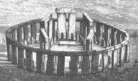
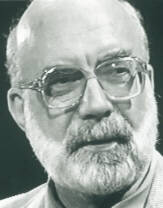
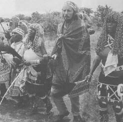
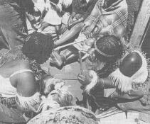
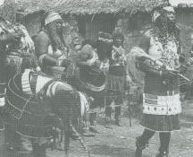
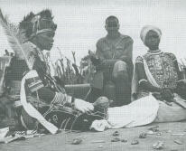

|
The peoples of prehistoric times and primitive cultures have laid the groundwork for modern consciousness exploration. Our knowledge of these groups comes from archeological or anthropological observation. In some cases, researchers have lived for long periods in the wilderness with primitive peoples. We will find that return to the wilderness has been used throughout history to explore the deeper layers of the psyche. The way of perceiving the world that emphasizes the existence of spirits, ghosts, and gods who interact with men and inhabit objects is called animism. Animism characterizes virtually all primitive and ancient cultures. In many languages, the word for spirit is also the word for breath -- which leaves the body at death. Spirits could occupy the bodies of living men and animals causing either illness or insanity, but they often imparted higher wisdom. Psychic powers were ascribed to aid from such spirits. Also commonly found in primitive cultures is the correlative belief in a general spiritual force, or mana, permeating all of nature. Evidence from cave art, daring back at least 30,000 years, suggests caves were used for magical ritual purposes. In certain cases it must have been necessary to crawl for hours through the caves in order to reach the locale of the artwork and related artifacts. It may be that solitude inside such a cavern was an initiation technique used to explore the inner realms of being. Markings on antlers and bones indicate that people made notations of the phases of the moon as long as 30,000 years ago and suggest that the cave rituals and other cultural practices had a seasonal or periodical orientation. It has been suggested that prehistoric people may have been sensitive to different phases in the lunar cycle as special times for meditation. The monumental Stonehenge, built in prehistoric England, is oriented towards equinoxes, solstices and lunar eclipses during the equinox and suggests similar usage.  Stonehenge The leaders in such practices and rituals were called shamans by anthropologists. They were the earliest professionals. They mediated between the inner life of the tribe and its external affairs. They presided at all "rites of passage" such as births, puberty initiations, marriages, and deaths as well as all "rites of intensification" which attempt to strengthen the tribe's relation with powerful natural forces in times of crisis such as famine, storm, and epidemic. The role of the shaman varied from culture to culture and with different circumstances. In some cultures shamanic ideology, technique and ritual dominated social interaction while in others it constituted a secondary influence. The word shaman itself has a Sanskrit origin, and means ascetic. The shaman's power essentially lies in mastering the ecstatic techniques of dreams, visions, and trances. Ecstasy in its original sense meant an altered state of consciousness with an awareness of the single emotion rapture. The shaman also mastered the traditional mythology, genealogy, belief system and secret language of the tribe as well as its healing methods. The youth who are called to be a shaman attracts attention through their love for solitude, desire to roam in the woods or in unfrequented places, visions, and spontaneous song-making. Sometimes they enter trance-like states which make them unconscious. These signs are regarded with pleasure and awe by the tribespeople who generally believe that their soul is being carried away by spirits to a place where they are instructed, sometimes by his shaman ancestors, in the secrets of the profession. In some cultures the behavior of the prospective shaman is described in terms that seem to indicate psychopathology. However it is precisely because they succeed in curing themselves that these individuals become shamans. Often a crisis bordering on madness is provoked in the future shamans by the sudden announcement to others in the tribe that they have been chosen by the spirits for this profession. In other cases this initiatory sickness is induced by the use of drugs or fasting and other austerities. Regardless of the means, the symbolic pattern of death and rebirth common to all initiation rites will be reenacted. The initiatory rituals peculiar to Siberian and central Asian shamanism include a ritual series of waking dreams. During this ritual Siberian shamans maintain that they "die" and lie inanimate for from three to seven days in a tent or other solitary place: Imagine having your body dismembered by demons or ancestral spirits; your bones cleaned, the flesh scraped off, the body fluids thrown away, and your eyes torn from their sockets, but set aside so that you may watch the entire procedure. It is only after such a purgative experience that shamans are said to obtain the powers of shamanistic healing. Then they are given new flesh and the spirits instruct them in magical arts. They experience the gods of the heavens; they learn to find the souls of sick men who have wandered or been carried by demons away from their bodies. They learn how to guide the soul of the dead to their new abode; and they add to their knowledge by regular association with higher beings. Shamans are said to "die" and return to life many times. They know how to orient themselves in the unknown regions they enter during their ecstasy. They learn to explore the new planes of existence their experiences disclose. It is standard anthropological knowledge that shamanistic systems are similar in places like Tierra del Fuego, at the tip of South America, or in Lapland in northern Europe, or in Siberia or Southern Africa. The Australian aboriginals have the same system, basically, and they were separated thirty or forty thousand years from other peoples. A unique approach to shamanism is that of Michael Harner, author of The Jivaro, Hallucinogens and Shamanism, and The Way of the Shaman. Dr. Harner is a former professor of anthropology at the New School for Social Research, and is currently acting as the director of the Center for Shamanic Studies.  Michael Harner (courtesy Thinking Allowed Productions) He is actively involved in teaching Westerners how to live and practice as shamanic healers. In my Thinking Allowed interview with him, he responded to an old anthropological position that shamans were mentally imbalanced: There was this tendency to feel that shamans were psychotic individuals -- in other words, crazy -- but they had the good fortune to live in crazy cultures, i.e., cultures other than our own, which of course is very sane. There also was the point of view that they were fakers -- that when they claimed to go into a trance, which is the word they often used in the literature, that they could not possibly be going into the trance and having these experiences they claimed to do. I have run into ethnologists from Germany, from Russia, who in fact in the course of field work stuck pins or burning embers under the skin of shamans while they were in a trance, to see if they were really faking or not. There was this kind of skepticism.I responded by citing Mircea Eliade who wrote that even if shamans were crazy, it was uncanny how they could dance all night long, and maintain this incredible level of energy. Harner's reply took us right to what he maintains is the heart of shamanism: The person who is doing this work is drawing upon an experience of power far beyond himself or herself. Shamanic ecstasy, where one is having ineffable experiences, make living very worthwhile. Such experiences are connected with helping others and working in harmony with nature.Evidence suggests to us that ancient shamans possessed a very detailed knowledge about the use of a wide variety of mind-altering drugs. The earliest religious literature of India points to prehistoric use of a mythical, or at least undiscovered, drug called soma for inducing contact with nature's innermost forces. The primitive tribes of Central and South America are known for their ritualistic use of drugs such as yage, peyote and a number of others for the purpose of inducing ecstatic experiences. At times ecstasy is induced through drum rhythms and night-long dancing. There is also reason to believe ancient shamans engaged in practices that could be considered the prototypes of modern systems of yoga and meditation. It was commonly thought that while in these various altered states of consciousness the shaman had the ability to diagnose diseases, see into the future, see objects at a great distance, walk over hot coals, and speak to the spirits of the dead. Accounts of this type are all too common in the stories researchers and explorers bring back. However, a most promising line of research into the nature of such oddities was for a time taken up by one unusual young man, unfortunately now deceased. Adrian Boshier, of the Museums of Science and Man in Johannesburg, South Africa, used an approach that combines living off the land in the African wilds while receiving initiations as a sangoma or witchdoctor with the objective work of a scientist studying other shamans.  Adrian Boshier in initiation ceremony, January 1975 Komi tribe, North Western Transvaal In his explorations, he has discovered 112 previously unknown prehistoric cave paintings whose ritual function and value has been preserved in the secret oral traditions of the witchdoctors whose friendship and trust he has cultivated. He discussed one such encounter:  The female trainee on the right, above, with bladders in hair, is divining the whereabouts of hidden objects to prove her powers. The sangoma on the left who is testing her is one that Boshier had been studying for several years. The bladders in the hair of the initiate had been taken from sacrificial animals and have been filled with the breath of her teacher. This girl is being "reborn" as a sangoma. Swaziland, 1972.  During the ceremonies at which animals are sacrified to the ancestral spirits each sangoma is possessed by those spirits who talk through them -- thanking the host, praising the spirits, giving advice, etc. The woman in the right foreground is in the midst of this activity. Jackson, Transvaal, 1971. Upon arrival at a village some ten miles away, we were directed to one of the mud huts where we found the woman, Makosa, sitting on the floor amongst bones, dice and shells -- her instruments of divination. Completely unperturbed by the arraval of our party, she did not even look up, but continued studying the rethrowing the bones. Eventually she spoke. "One of you is here to ask me questions, he has a head full of questions, he is not a man of this land, but comes from over the big water." Then ignoring the others, she looked directly at me and asked, "What do you want?" I chided her and in the traditional manner told her to inquire this of her spirits. Again she picked up her bones, blew on them, and cast them down. She repeated this process three times, studying carefully the pattern between each throw. After some time she picked up a small knuckle bone and said that this bone represented me. It was the bone of the impala. The impala ram is an animal that lives with its herd most of the time, she told me, but periodically it leaves its group and goes off into the wilds by itself. It always returns to its herd, but again it must leave to wander alone. "This is you," she said, "you live with your people, but sometimes you go into the bush alone. You go out to learn, living in the wild places, the mountain, the desert.... This is your life's work. What you learn is what the spirits are teaching you. This is the only way."  A sangoma studying her bones (taula) of divination. Her patients look on as she studies the patterns in the bones, shakes the rattle in her hand and calls upon her ancestors to help her "see." The taula are composed of ivory tablets with symbols engraved upon them, seashells, knucklebones, tortoise shells, seeds and coins (courtesy Adrian K. Boshier). These innate visions, so familiar to primitive
peoples, are the heritage of humanity and have been preserved in various
forms within all cultures.
References . Heinz Werner, Comparative Psychology of Mental Development. New York: Science Editions, 1961. This is a classic text of cross-cultural psychological development. . Alexander Marshack, The Roots of Civilization. New York: McGraw-Hill, 1971. Scientific detective work of quality -- well illustrated, quite technical, yet very readable. . Charles Muses, "A New Way of Altering Consciousness: Manual of Dynamic Resonance Meditation," The Journal for the Study of Consciousness, 5(2), 141-164. An interdisciplinary scholar, Muses edited and contributed to this now defunct journal. . Gerald S. Hawkins, Stonehenge Decoded. New York: Dell, 1965. This solution to an ancient mystery is now the basis for planetarium exhibits throughout the world. . Mircea Eliade, Shamanism. Princeton, NJ: Princeton University Press, 1972. . Michael J. Harner, The Way of the Shaman (#S059) in Living Traditions (#Q304), videotapes available from Thinking Allowed Productions. For further information write to 2560 Ninth Street, Suite 123, Berkeley, CA 94710 or phone (510) 548-4415. . Michael J. Harner, (ed.), Hallucinogens and Shamanism. New York: Oxford University Press, 1973. Harner is currently active in training westerners in shamanistic approaches. . Many readers will undoubtedly be familiar with the marvelous accounts of shamanic initiation written by Carlos Casteneda. Fewer, however, are aware that scholars have uncovered so many inconsistencies in Casteneda's writings that it is now generally acknowledged that his work is most properly viewed as fiction in the magical realism genre than as legitimate anthropological inquiry. (See Richard DeMille, Casteneda's Journey. Santa Barbara, CA: Capra Press, 1976. Also see Richard DeMille (ed.), The Don Juan Papers. Santa Barbara, CA: Ross-Erikson, 1980.) Similar criticism is now emerging suggesting that the accounts of Lynn Anderson, another popular writer on shamanic initiation, may also be best viewed as fiction. . Adrian K. Boshier, "African Apprenticeship,"
Parapsychology
Review, 5(5), July-August 1974.
|